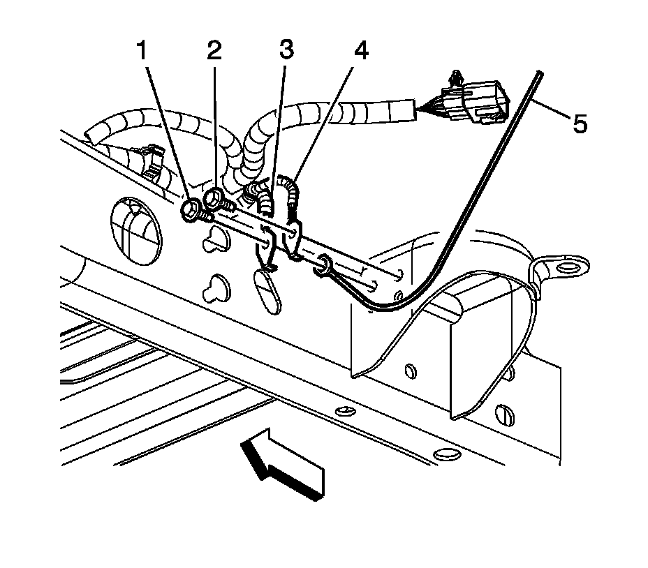
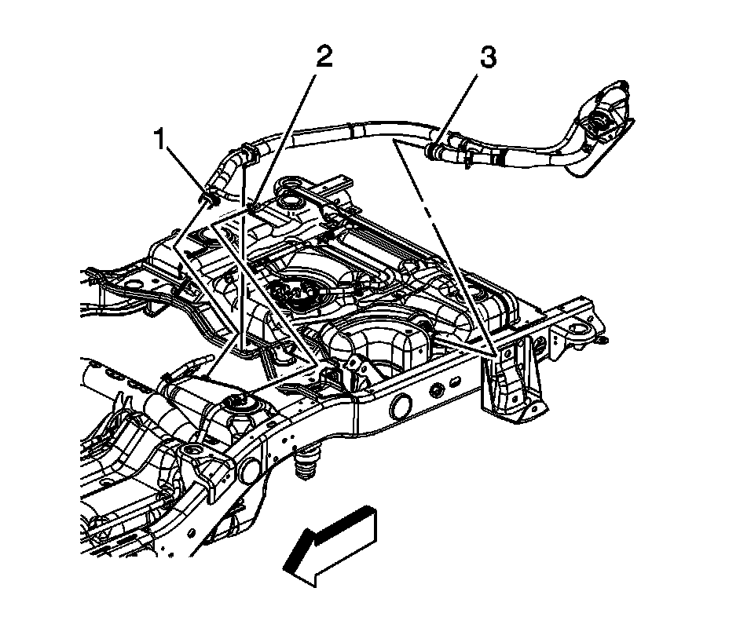
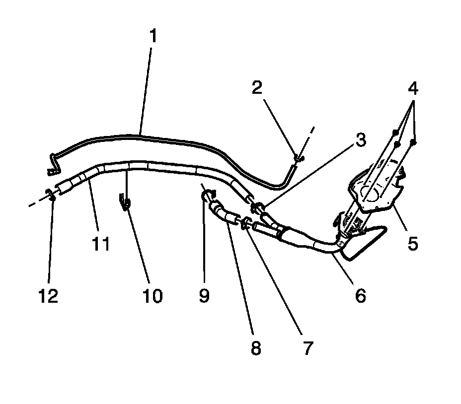

Fuel Tank Filler Pipe Replacement (2500 Series)
FUEL TANK FILLER PIPE REPLACEMENT (2500 SERIES)
REMOVAL PROCEDURE

1. Remove the rear fuel tank.
2. Remove the chassis wiring harness ground bolt (2).
3. Remove the left rear lamp ground wire (4) and fill pipe ground strap (5) from the frame.

4. Remove the rear axle vent hose clip from the fill pipe neck.
5. Loosen the fuel tank fill hose clamp (1) at the front tank.
6. Disconnect the fuel fill hose evaporative emission (EVAP) line quick connect fitting (2) from the fuel tank line.
7. Remove the fuel fill hose from the front tank.
8. Remove the fuel fill hose integral clamp from the crossmember.
9. Remove the fuel fill hose/pipe assembly.
10. Cap the open end of the fuel tank in order to prevent fuel system contamination.
11. Cap the open ends of the fuel/EVAP lines in order to prevent fuel/EVAP system contamination.
12. If replacing any serviceable part of the fill pipe assembly proceed to the disassemble procedure, otherwise proceed to the installation procedure.
DISASSEMBLE

- Evaporative emission canister hose (1)
- Evaporative emission canister hose clamp (2)
- Fuel tank fill pipe clamp (3)
- Fuel tank fill pipe housing bolts (4)
- Fuel tank fill pipe housing (5)
- Fuel tank fill pipe restrictor (6)
- Fuel tank fill pipe clamp (7)
- Fuel tank vent hose (8)
- Fuel tank fill hose clamp (9)
- Evaporative emission canister hose clip (10)
- Fuel tank fill pipe (11)
- Fuel tank fill hose clamp (12)
ASSEMBLE
- NOTE: Refer to Fastener Notice.
Fuel tank fill hose clamp (12)
Tighten the clamp to 2.5 N.m (22 lb in).
- Fuel tank fill pipe (11)
- Evaporative emission canister hose clip (10)
- Fuel tank fill hose clamp (9)
Tighten the clamp to 2.5 N.m (22 lb in).
- Fuel tank vent hose (8)
- Fuel tank fill pipe clamp (7)
Tighten the clamp to 2.5 N.m (22 lb in).
- Fuel tank fill pipe restrictor (6)
- Fuel tank fill pipe housing (5)
- Fuel tank fill pipe housing bolts (4)
Tighten the bolts to 2.3 N.m (20 lb in).
- Fuel tank fill pipe clamp (3)
Tighten the clamp to 2.5 N.m (22 lb in).
- Evaporative emission canister hose clamp (2)
Tighten the clamp to 2.5 N.m (22 lb in).
- Evaporative emission canister hose (1)
INSTALLATION PROCEDURE
1. Remove the caps from the open end of the front fuel tank.
2. Remove the caps from the fuel/EVAP lines.
3. Install the fuel fill hose/pipe assembly.
4. Install the fuel fill hose to the front tank.
5. Connect the fuel fill hose EVAP line quick connect fitting (2) to the fuel tank line.
6. Tighten the fuel tank fill hose clamp (1) at the front tank.
Tighten the clamps to 2.5 N.m (22 lb in).
7. Install the fuel fill hose integral clamp to the crossmember.
8. Install the rear axle vent hose clip to the fill pipe neck.
9. Position the fill pipe ground strap (5) to the left rear lamp ground wire (4).
10. Install the rear lamp ground wire (4) and ground strap (5) to the frame. Insert the lamp ground wire anti-rotation tab into the hole in the frame.
11. Insert the chassis wiring harness ground bolt.
Tighten the bolt to 9 N.m (80 lb in).
12. Install the rear fuel tank.